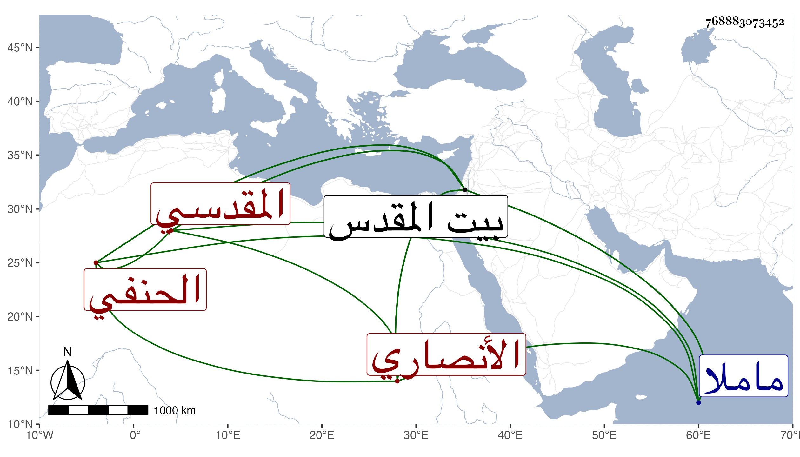

0902Sakhawi.DawLamic.ITO20230111-ara1.EIS1600.768883073452
Biography ID: 768883073452
684
علي بن أبي بكر بن عيسى العلاء بن التقي الأنصاري المقدسي الحنفي الآتي أبوه ويعرف كهو بابن الرصاص بمهملات مكسورة ثم مفتوحة . ولد في سنة اثنتين وعشرين وثمانمائة ، ومات في يوم الاثنين سادس عشر رمضان سنة اثنتين وثمانين وصلى عليه من الغد ودفن بتربة ماملا بجوار عبد الله البسكري ظاهر القدس وكان فاضلا منجمعا عن الناس قليل الكلام جيد الخط كتب بخطه كتبا في الفقه والتفسير وغيرهما وخلف والده في مشيخة المدرسة المحمدية وتدريس النحوية كلاهما ببيت المقدس وفي التصديرية بالخليل رحمه الله وإيانا .
